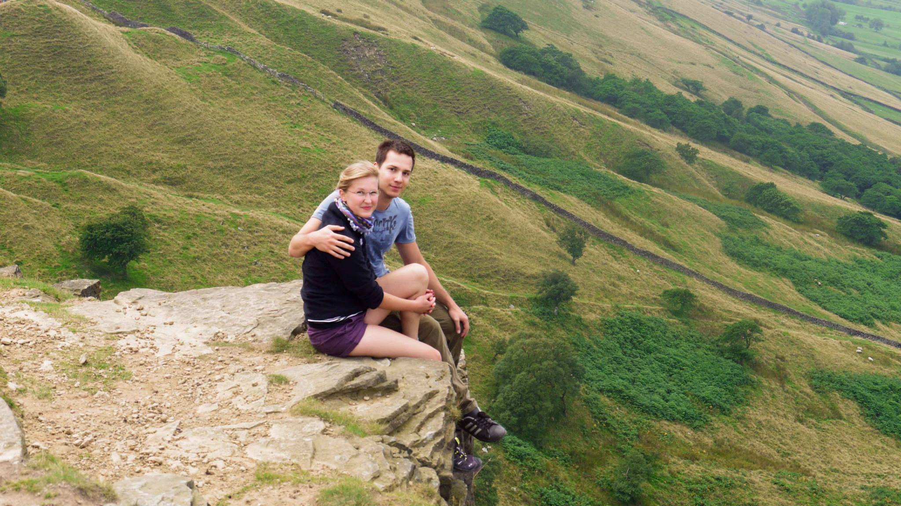
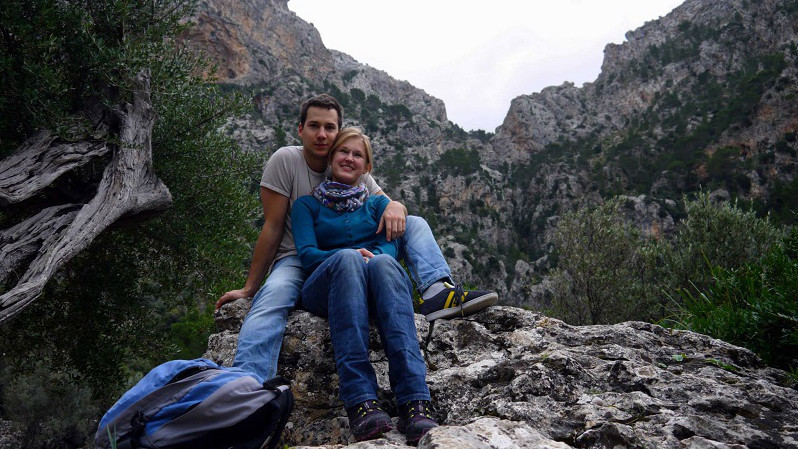
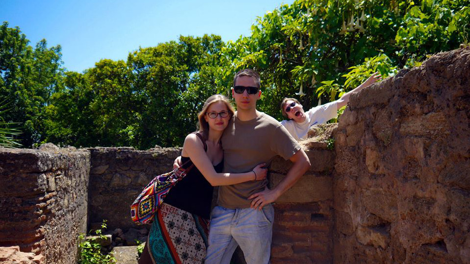
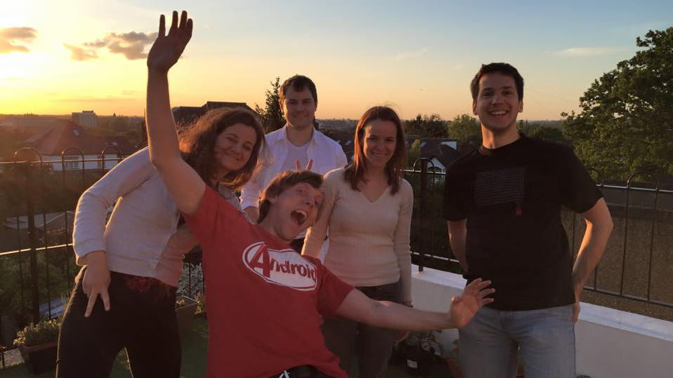

Program
SZERTARTÁS
Máriaremetei Kisboldogasszony-bazilika
Templomkert utca 1., Budapest, 1029
2016 Július 8.-a, Péntek, du. 3 óra
Lakodalom
Petneházy Huszárcsárda
Feketefej u. 2., Budapest (Adyliget), 1029
2016 Július 8.-a, Péntek, egyből a templomi szertartás után
TÉRKÉP
Rólunk
Egy házibuliban ismerkedtünk meg 2013 júniusában, amibe egyikünk sem akart elmenni. Kasia tudta, hogy csak kocka informatikusok lesznek ott, és művészlélekként félt, hogy unalmasnak fogja találni. Kristóf sem számított túl sokra, mert egy olyan bulinak ígérkezett, ami... hát... kocka informatikusokkal lesz tele!
De mindketten elmentünk, és szerelem volt első látásra!

A nyár folyamán járni kezdünk, és elmentünk első közös túránkra is a Peak Districtbe. Ezen kívül utaztunk Mallorcára, Marokkóba, Norvégiába, Görögországba és keresztül utaztunk a barátainkkal a Balkánon is.
- 
- 


2015 januárjában költöztünk össze. Azóta Surbitonban élvezzük a gyönyörű parkokat, a Temzepartot és a sok környező apró falu hangulatát, illetve barátaink társaságát!

A lánykérés egy romantikus vacsora után történt, ahogy hazafele sétáltunk a Temze partján, 2015 decemberében. Kasia természetesen igent mondott!


Ajándék
Nem várunk nászajándékokat a vendégektől, azonban ha szeretnél hozzájárulni a nászutunk költségeihez, akkor a menyasszonytánc során erre lesz lehetőség. A helyszínen lesznek kis borítékok, amikre ráírhatod, hogy mire szánod az adott összeget. Meghívhatsz minket egy koktélra vagy sörre, vacsorára, esetleg fizethetsz pár kilómétert a repülőutunkből.